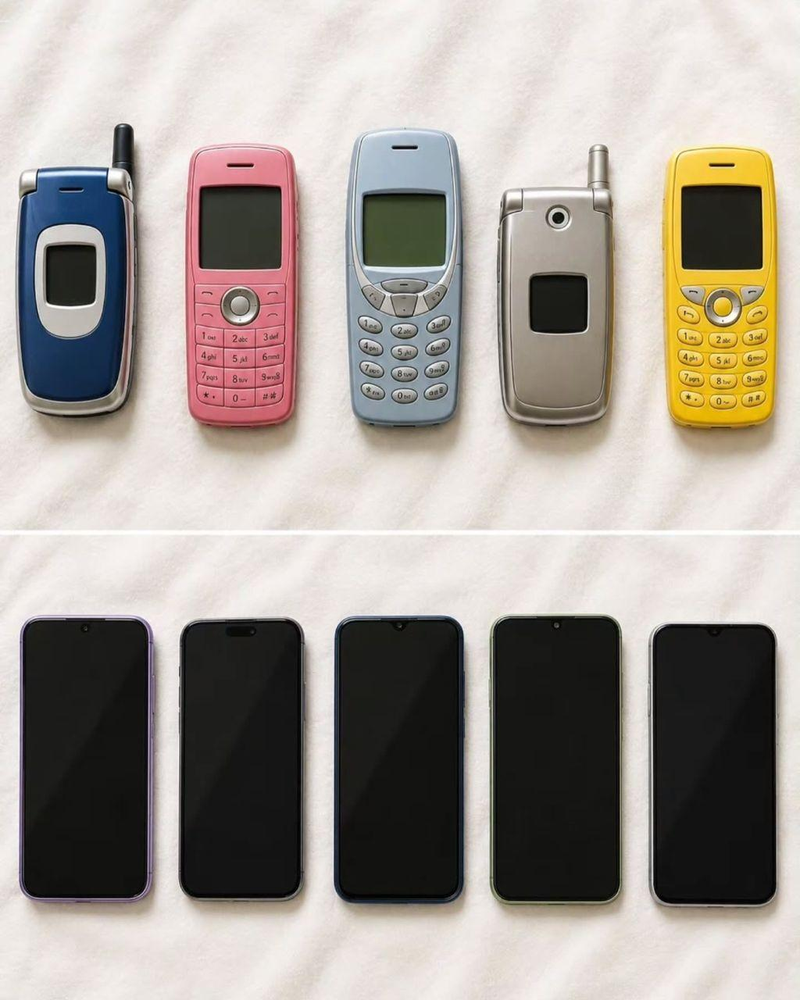
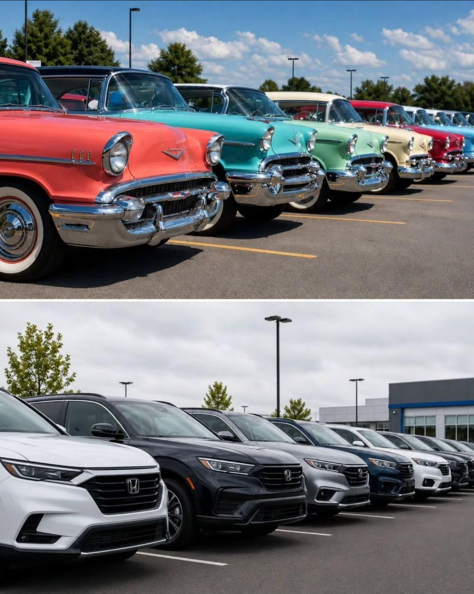
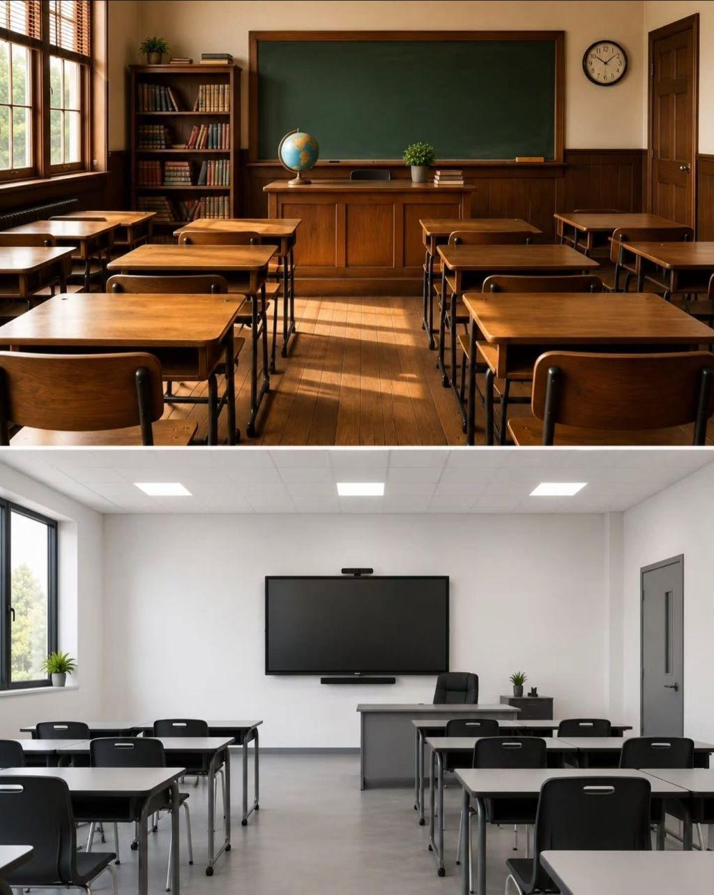
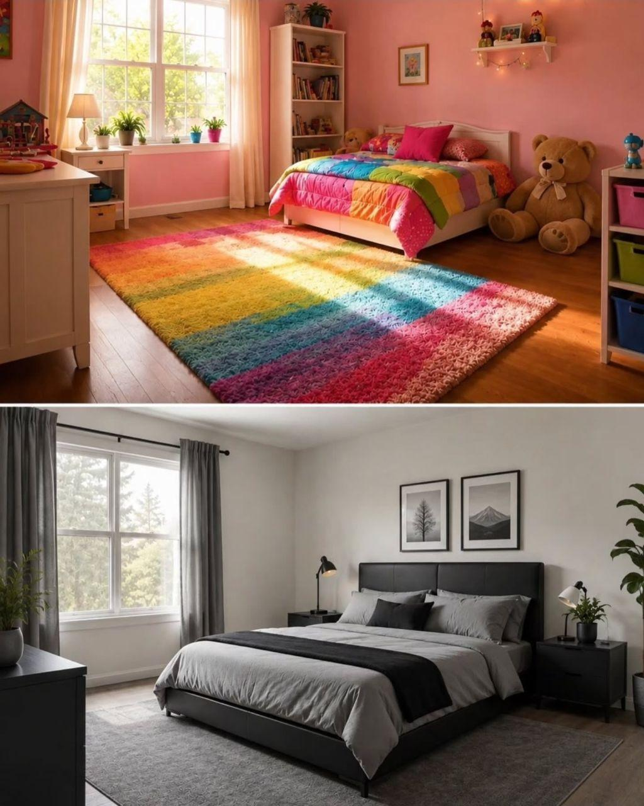
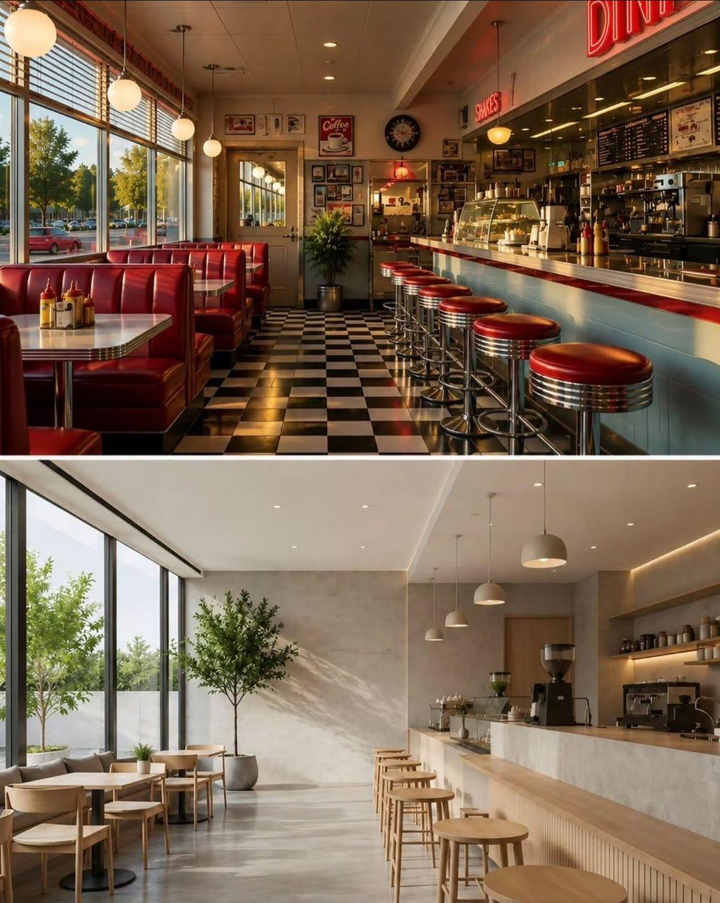
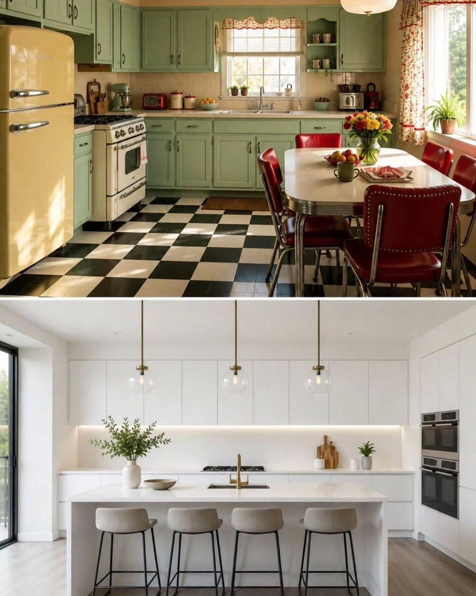
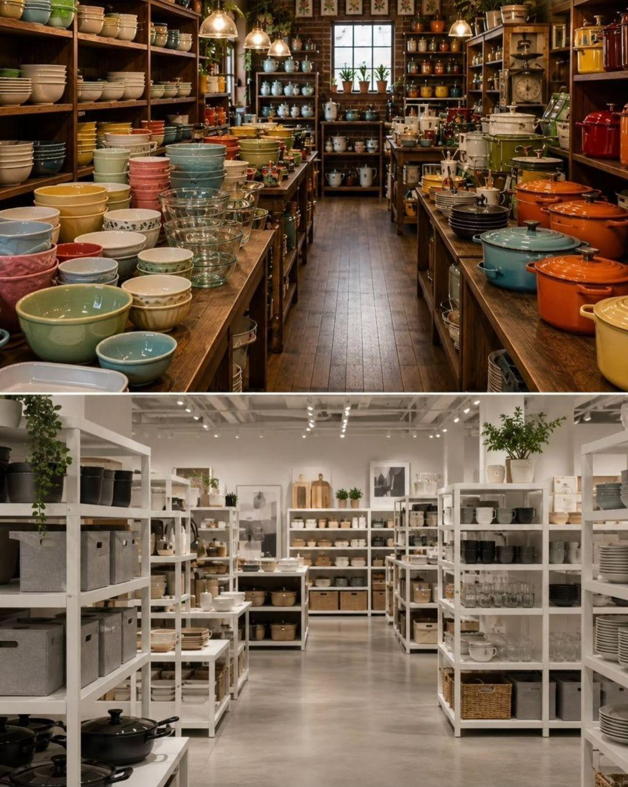
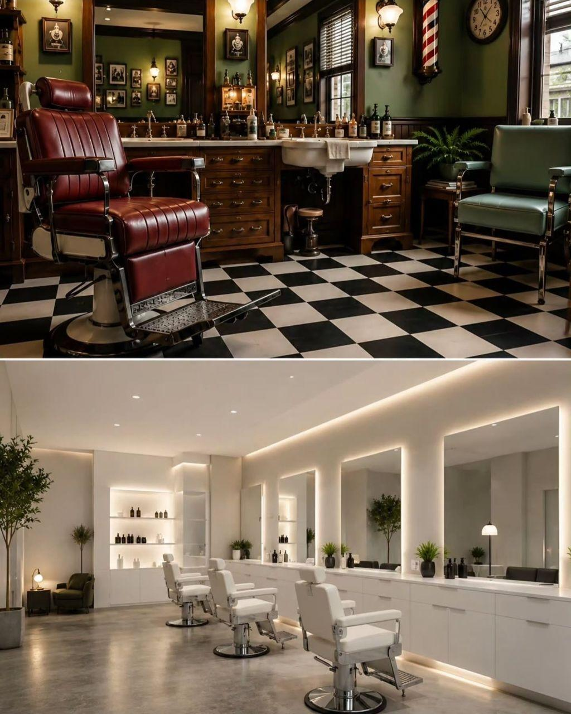
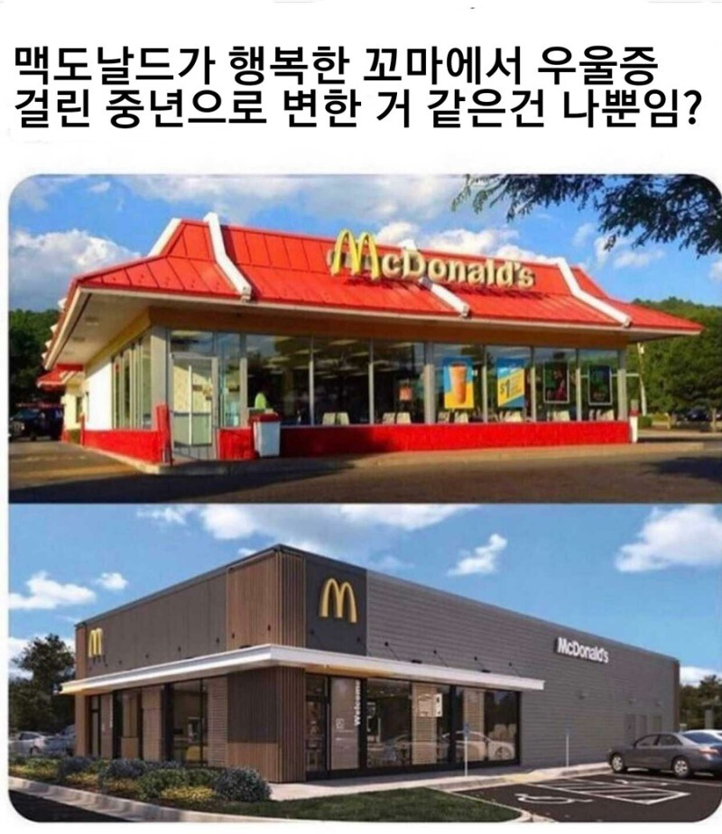

        
댓글
수집 당시 댓글 29개
주둥이척수반사 · 3 일 전
시대의 구원자 딱정벌레색 트레일블레이저
네셔널디스커버리mlb이름만빌린옷 · 3 일 전
트랙슨가 그게더이뻐보이더라
하이네켄 · 3 일 전
색감 없으면 무채색이 편하긴해
주관적인요정 · 3 일 전
일단 색이 강하고 쨍할수록 변색이 빨라서 유지보수가 좀 힘든 면이 있다 노후화시에도 붉은계열의 색휘발은 더 빠른데 이게 방치하면 희끗한 연핑크색이 되면서 아주 꼴보기 싫고 너무 노포같은 느낌이됨 속도의 차이일뿐 다른 강렬한 컬러들은 다 관리가 힘듦
매슬로 · 3 일 전
아 그래서 고딕걸이 유행이구나
경자 · 3 일 전
무채색 좋은데?
조용히하세엽 · 3 일 전
둘 다 좋아
Boobie · 3 일 전
난 저런 LED 스트립 감성이 좋더라 밝기조절에 색온도 조절도 가능하면 최고
마키마의반죽교실 · 3 일 전
폰은 시발 ㅋㅋ 뒤통수를 보여줘야지
황태무침 · 3 일 전
옛날만큼 화려하지는 않아도 폰은 ㅈㄴ 억지긴하다
댓글은똥이야 · 3 일 전
관리가 압도적으로 편하니깐
가족같은김정은 · 3 일 전
그냥 내 생각엔 안질리는 것 같음 무채색이
병들었음 · 3 일 전
억까도몇개 있는거같어
텅빈우유팩 · 3 일 전
색이 들어가면 유지보수하기도 그렇고 장기적 측면에서 유행 안타는게 오래쓰기좋아서 실용측면땜에 더 그런거같음
닉으로드립치고싶냐 · 3 일 전
스칸디나비아풍 얘기하시는구나
시라누이Q · 3 일 전
우중충 좋아용
워니랑 · 3 일 전
여자 주인공 빨리 구해라! 구교환 이노마
유리멘탈 · 3 일 전
어흐 깔끔해~
닌닌이다 · 3 일 전
그래서 크게보면 다들 차분한 분위기가 된 것 같기도 해
초코맛초코 · 3 일 전
무채색 조아
분식삼대장 · 3 일 전
머 유행은 돌고 도는거지
아뇨 · 3 일 전
점 하나 찍힌 현대미술이 생각나네
즐기시게냅둬 · 3 일 전
ㄱㅊ 나중엔 ai보정렌즈가 취향에맞게 색감 보정해줄거임 막말로 세상을 마인크래프트로 만드는것도 가능
뜨거운아아하나주세요 · 3 일 전
트렌드에 따라 다른거지 뭔ㅋㅋㅋ
목살필라프 · 3 일 전
유일하게 미용실만 예전께 이쁘네
민트초코갈비찜 · 3 일 전
그냥 시대의흐름에 따른 디자인의 변경이지
날만졌잖아요 · 3 일 전
알록달록이 피곤하고 지겨우니까 모던 미니멀이 유행하는거지 또 질리면 돌아감
긍정왕오키도킹 · 2 일 전
모-던 하니 예쁘고나
음경해면체풍차돌리기 · 12 시간 전
폰은 개억까네 액정에 빨간색 칠해놓은거 살거냐